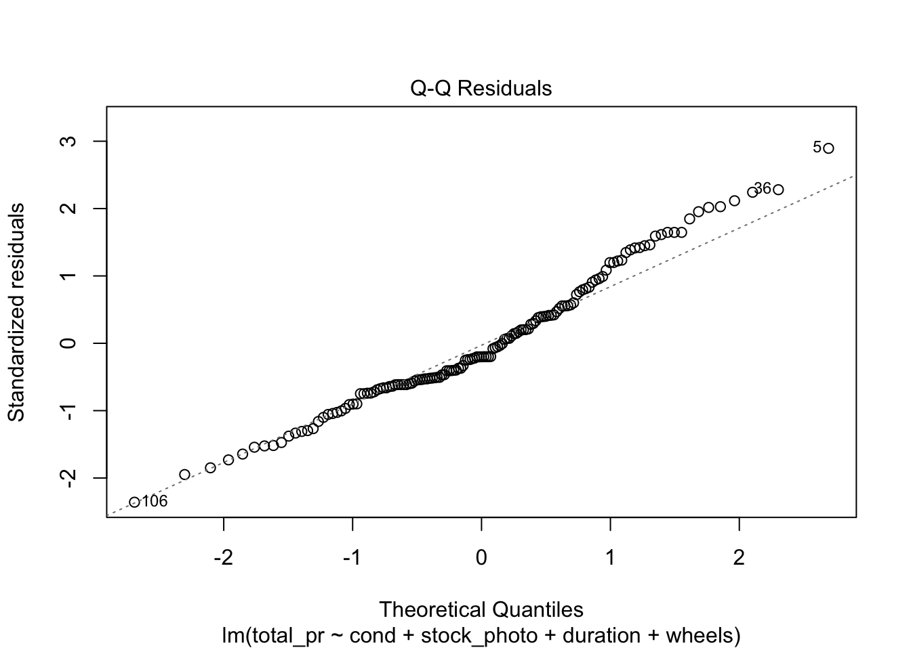
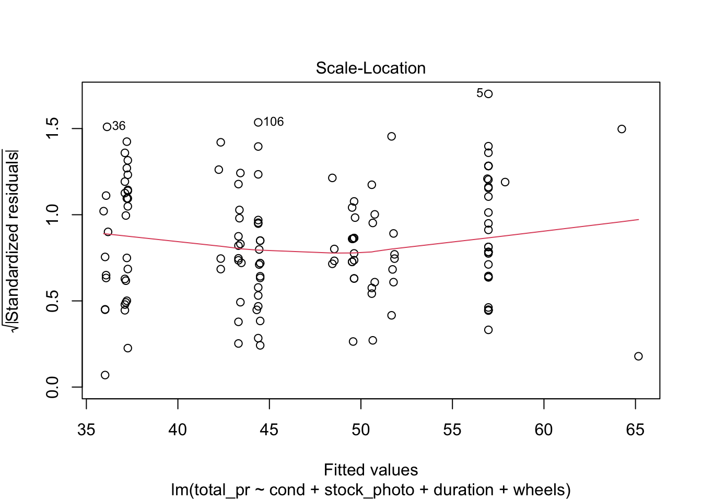
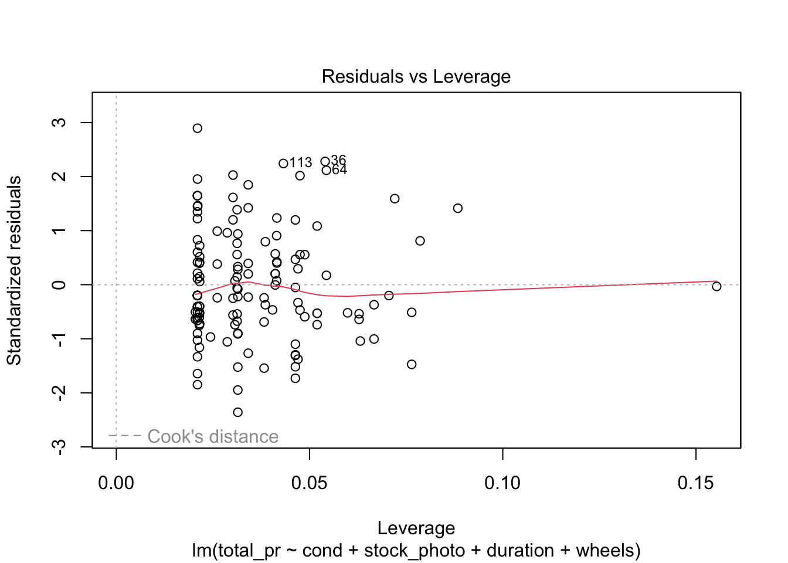

Textbook section 8.4 Inference for Linear Regression
Textbook section 9.1 Multiple Regression
10.2 More on Multiple regression
The OpenIntro Stats book gives an example of multiple regression with the mariokart data frame from their website. This involves the sale of 143 copies of the game Mario Kart for the Wii platform on eBay. They first predict the price based on most of the variables, like so.
Call:
lm(formula = total_pr ~ cond + stock_photo + duration + wheels,
data = mariokart)
Residuals:
Min 1Q Median 3Q Max
-19.485 -6.511 -2.530 1.836 263.025
Coefficients:
Estimate Std. Error t value Pr(>|t|)
(Intercept) 43.5201 8.3701 5.199 7.05e-07 ***
condused -2.5816 5.2272 -0.494 0.622183
stock_photoyes -6.7542 5.1729 -1.306 0.193836
duration 0.3788 0.9388 0.403 0.687206
wheels 9.9476 2.7184 3.659 0.000359 ***
---
Signif. codes: 0 '***' 0.001 '**' 0.01 '*' 0.05 '.' 0.1 ' ' 1
Residual standard error: 24.4 on 138 degrees of freedom
Multiple R-squared: 0.1235, Adjusted R-squared: 0.09808
F-statistic: 4.86 on 4 and 138 DF, p-value: 0.001069
plot(m)
There are four diagnostic plots in the above output. Each one gives us information about the quality of the model.
10.2.1 Residuals vs Fitted
This plot tells you the magnitude of the difference between the residuals and the fitted values. There are three things to watch for here. First, are there any drastic outliers? Yes, there are two, points 65 and 20. (Those are row numbers in the data frame.) You need to investigate those and decide whether to omit them from further analysis. Were they typos? Mismeasurements? Or is the process from which they derive intrinsically subject to occasional extreme variation. In the third case, you probably don’t want to omit them.
Second, is the solid red line near the dashed zero line? Yes it is, indicating that the residuals have a mean of approximately zero. (The red line shows the mean of the residuals in the immediate region of the \(x\)-values of the observed data.)
Third, is there a pattern to the residuals? No, there is not. The residuals appear to be of the same general magnitude at one end as the other. The things that would need action would be a curve or multiple curves, or a widening or narrowing shape, like the cross section of a horn.
10.2.2 Normal Q-Q
This is an important plot. I see many students erroneously claiming that residuals are normally distributed because they have a vague bell shape. That is not good enough to detect normality. The Q-Q plot is the standard way to detect normality. If the points lie along the dashed line, you can be reasonably safe in an assumption of normality. If they deviate from the dashed line, the residuals are probably not normally distributed.
10.2.3 Scale-Location
Look for two things here. First, the red line should be approximately horizontal, meaning that there is not much variability in the standardized residuals. Second, look at the spread of the points around the red line. If they don’t show a pattrn, this reinforces the assumption of homoscedasticity that we already found evidence for in the first plot.
10.2.4 Residuals vs Leverage
This shows you influential points that you may want to remove. Point 84 has high leverage (potential for influence) but is probably not actually very influential because it is so far from Cook’s Distance. Points 20 and 65 are outliers but only point 20 is more than Cook’s Distance away from the mean. In this case, you would likely remove point 20 from consideration unless there were a mitigating reason. For example, game collectors often pay extra for a game that has unusual attributes, such as shrink-wrapped original edition. As an example of a point you would definitely remove, draw a horizontal line from point 20 to a vertical line from point 84. Where they meet would be a high-leverage outlier that is unduly affecting the model no matter what it’s underlying cause. On the other hand, what if you have many such points? Unfortunately, that probably means the model isn’t very good.
10.2.5 Removing offending observations
Suppose we want to get rid of points 20 and 65 and rerun the regression. We could either do this using plain R or the tidyverse. I prefer the tidyverse method because of clarity of exposition.
Call:
lm(formula = total_pr ~ cond + stock_photo + duration + wheels,
data = df)
Residuals:
Min 1Q Median 3Q Max
-11.3788 -2.9854 -0.9654 2.6915 14.0346
Coefficients:
Estimate Std. Error t value Pr(>|t|)
(Intercept) 41.34153 1.71167 24.153 < 2e-16 ***
condused -5.13056 1.05112 -4.881 2.91e-06 ***
stock_photoyes 1.08031 1.05682 1.022 0.308
duration -0.02681 0.19041 -0.141 0.888
wheels 7.28518 0.55469 13.134 < 2e-16 ***
---
Signif. codes: 0 '***' 0.001 '**' 0.01 '*' 0.05 '.' 0.1 ' ' 1
Residual standard error: 4.901 on 136 degrees of freedom
Multiple R-squared: 0.719, Adjusted R-squared: 0.7108
F-statistic: 87.01 on 4 and 136 DF, p-value: < 2.2e-16
plot(m)



What a difference this makes in the output and the statistics and plots about the output! Keep in mind, though, that I just did this as an example. Points 20 and 65 may be totally legitimate in this case. Also, note that you could use plain R without the tidyverse to eliminate those rows by saying something like df <- mariokart[-c(20,65),]. The bracket notation assumes anything before the comma refers to a row and anything after a comma refers to a column. In this case, I didn’t say anything about the columns, so the square brackets just have a dangling comma in them. The important point is that one method or another may seem more natural to you. For most students, the tidyverse approach is probably more natural, so I highlight that.
10.3 Logistic Regression
Logistic regression is a kind classification rather than regression. The book doesn’t make this point, but most textbooks do. You can divide machine learning problems into problems of regression and problems of classification. In regression, the \(y\) variable is more or less continuous, whereas in the classification problem, \(y\) is a set of categories, ordered or not. The word logistic comes from the logistic function, which is illustrated below. This interesting function takes an input from \(-\infty\) to \(+\infty\) and gives an output between zero and one. It can be used to reduce wildly varying inputs into a yes / no decision. It is also known as the sigmoid function.
Note that zero and one happen to be the boundaries of a probability measure. Hence, you can use the logistic function to reduce arbitrary numbers to a probability.
Call:
glm(formula = received_callback ~ gender, family = "binomial",
data = resume)
Coefficients:
Estimate Std. Error z value Pr(>|z|)
(Intercept) -2.40901 0.05939 -40.562 <2e-16 ***
genderm -0.12008 0.12859 -0.934 0.35
---
Signif. codes: 0 '***' 0.001 '**' 0.01 '*' 0.05 '.' 0.1 ' ' 1
(Dispersion parameter for binomial family taken to be 1)
Null deviance: 2726.9 on 4869 degrees of freedom
Residual deviance: 2726.0 on 4868 degrees of freedom
AIC: 2730
Number of Fisher Scoring iterations: 5
10.3.1tidymodels approach
Datacamp shows a different way, using tidymodels in one of their tutorials. In this example, the bank wants to divide customers into those likely to buy and those unlikely to buy some banking product. They would like to divide the customers into these two groups using logistic regression, with a cutoff point of fifty-fifty. If there’s better than a fifty-fifty chance, they will send a salesperson but if there’s less than a fifty-fifty chance, they won’t send a salesperson.
library(tidymodels)#. Read the dataset and convert the target variable to a factorbank_df <-read_csv2(paste0(Sys.getenv("STATS_DATA_DIR"),"/bank-full.csv"))bank_df$y =as.factor(bank_df$y)#. Plot job occupation against the target variableggplot(bank_df, aes(job, fill = y)) +geom_bar() +coord_flip()
A crucial concept you’ll learn if you take a more advanced class, say 310D, is the notion of dividing data into two data frames, a training frame and a test frame. This is the conventional way to test machine learning models, of which logistic regression is one. You train the model on one set of data, then test it on another, previously unseen set. That’s the next thing done in this example.
#. Split data into train and testset.seed(421)split <-initial_split(bank_df, prop =0.8, strata = y)train <- split |>training()test <- split |>testing()#. Train a logistic regression modelm <-logistic_reg(mixture =double(1), penalty =double(1)) |>set_engine("glmnet") |>set_mode("classification") |>fit(y ~ ., data = train)#. Model summarytidy(m)
#. Class Predictionspred_class <-predict(m,new_data = test,type ="class")#. Class Probabilitiespred_proba <-predict(m,new_data = test,type ="prob")results <- test |>select(y) |>bind_cols(pred_class, pred_proba)accuracy(results, truth = y, estimate = .pred_class)
There are aspects of this approach, called hyperparameters, that influence the quality of the model. It can be tedious to adjust these aspects, called penalty and mixture, so here’s a technique for doing it automatically. You’ll learn about this and similar techniques if you take a more advanced course like 310D, Intro to Data Science.
#. Define the logistic regression model with penalty and mixture hyperparameterslog_reg <-logistic_reg(mixture =tune(), penalty =tune(), engine ="glmnet")#. Define the grid search for the hyperparametersgrid <-grid_regular(mixture(), penalty(), levels =c(mixture =4, penalty =3))#. Define the workflow for the modellog_reg_wf <-workflow() |>add_model(log_reg) |>add_formula(y ~ .)#. Define the resampling method for the grid searchfolds <-vfold_cv(train, v =5)#. Tune the hyperparameters using the grid searchlog_reg_tuned <-tune_grid( log_reg_wf,resamples = folds,grid = grid,control =control_grid(save_pred =TRUE))select_best(log_reg_tuned, metric ="roc_auc")
#. Fit the model using the optimal hyperparameterslog_reg_final <-logistic_reg(penalty =0.0000000001, mixture =0) |>set_engine("glmnet") |>set_mode("classification") |>fit(y~., data = train)#. Evaluate the model performance on the testing setpred_class <-predict(log_reg_final,new_data = test,type ="class")results <- test |>select(y) |>bind_cols(pred_class, pred_proba)#. Create confusion matrixconf_mat(results, truth = y,estimate = .pred_class)
Truth
Prediction no yes
no 7838 738
yes 147 320
precision(results, truth = y,estimate = .pred_class)